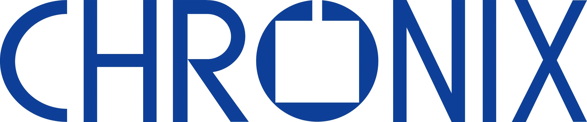

マシンビジョン/FA
vol.01
人手不足を打破する「全数自動検査」と「現場適応型AI」の新展開
📝 レポート解説
現場を止める「チョコ停」と「段取り替え負荷」をゼロへ。
液体レンズの超高速AFとエッジAIを統合し、ラインを無停止化する「現場即応型・全数検査」の実装ポイントを凝縮。

先端現場のブレークスルーを導く、最新技術・市場動向を一挙公開。
現場を止める「チョコ停」と「段取り替え負荷」をゼロへ。
液体レンズの超高速AFとエッジAIを統合し、ラインを無停止化する「現場即応型・全数検査」の実装ポイントを凝縮。
悪天候の死角をなくし、車両全体のセンサーコストを抑える。
カメラ・LiDAR・赤外線を束ねるマルチモーダル冗長設計と、SDV量産化に向けたデータ基盤の最前線。
ナノ領域の観測を阻む「熱歪み」と「大気揺らぎ」をリアルタイム補正。
先端半導体・超解像顕微鏡の限界精度を引き出す、電磁駆動ピエゾと可変形ミラー（AO）の最新制御技術。
ライン速度を落とさず、シリコン透過・樹脂選別をインライン化。
3D半導体の内部欠陥から廃プラ・食品選別まで、SWIR分光を活かした高速リアルタイム検査の実装ポイント。
微細穴あけから高反射金属の溶接まで、難加工の品質保証を確立。
青色レーザー等の国内先端事例と、加工精度をリアルタイムに担保するビームプロファイラー計測の最前線。
人的な巡回点検から、ドローン・定置型AIによる24時間常時監視へ。
メタン・アンモニア漏洩や環境規制の厳格化に先回りする、光学ガス検知（OGI）センシングの最新トレンド。